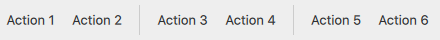

ToolSeparator QML Type
Separates a group of items in a toolbar from adjacent items. More...
| Import Statement: | import QtQuick.Controls |
| Inherits: |
Properties
- horizontal : bool
- orientation : enumeration
- vertical : bool
Detailed Description
ToolSeparator is used to visually distinguish between groups of items in a toolbar by separating them with a line. It can be used in horizontal or vertical toolbars by setting the orientation property to Qt.Vertical or Qt.Horizontal, respectively.

ToolBar { RowLayout { anchors.fill: parent ToolButton { text: qsTr("Action 1") } ToolButton { text: qsTr("Action 2") } ToolSeparator {} ToolButton { text: qsTr("Action 3") } ToolButton { text: qsTr("Action 4") } ToolSeparator {} ToolButton { text: qsTr("Action 5") } ToolButton { text: qsTr("Action 6") } Item { Layout.fillWidth: true } } }
See also Customizing ToolSeparator and Separator Controls.
Property Documentation
horizontal : bool |
This property holds whether orientation is equal to Qt.Horizontal.
It is useful for customizing ToolSeparator.
See also orientation and vertical.
orientation : enumeration |
This property holds the orientation of the tool separator.
Possible values:
| Constant | Description |
|---|---|
Qt.Horizontal | A horizontal separator is used in a vertical toolbar. |
Qt.Vertical | A vertical separator is used in a horizontal toolbar. (default) |
vertical : bool |
This property holds whether orientation is equal to Qt.Vertical.
It is useful for customizing ToolSeparator.
See also orientation and horizontal.